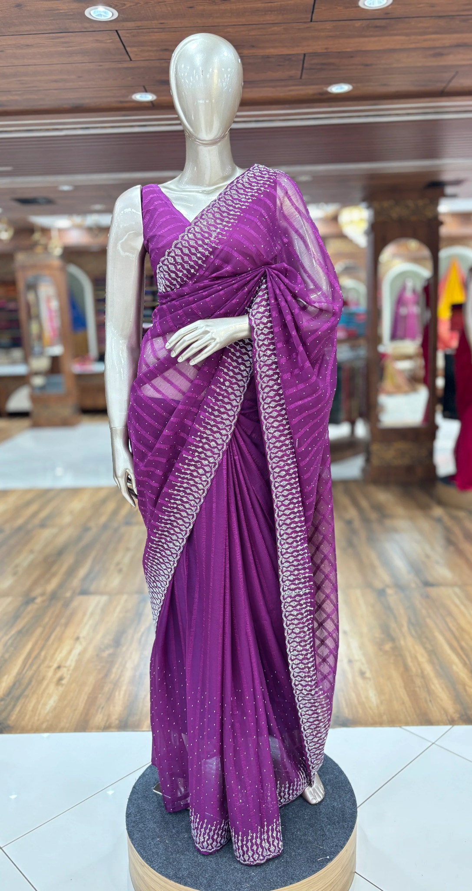

Saree
A continuous piece of fabric, typically 5-9 yards long, gracefully draped over a fitted blouse and an underskirt. Traditionally worn by women, with several draping styles and fabric choices, from lightweight cottons to ornate silks. It normally needs a specific draping technique, but pre-stitched sarees are now available for easier wear.